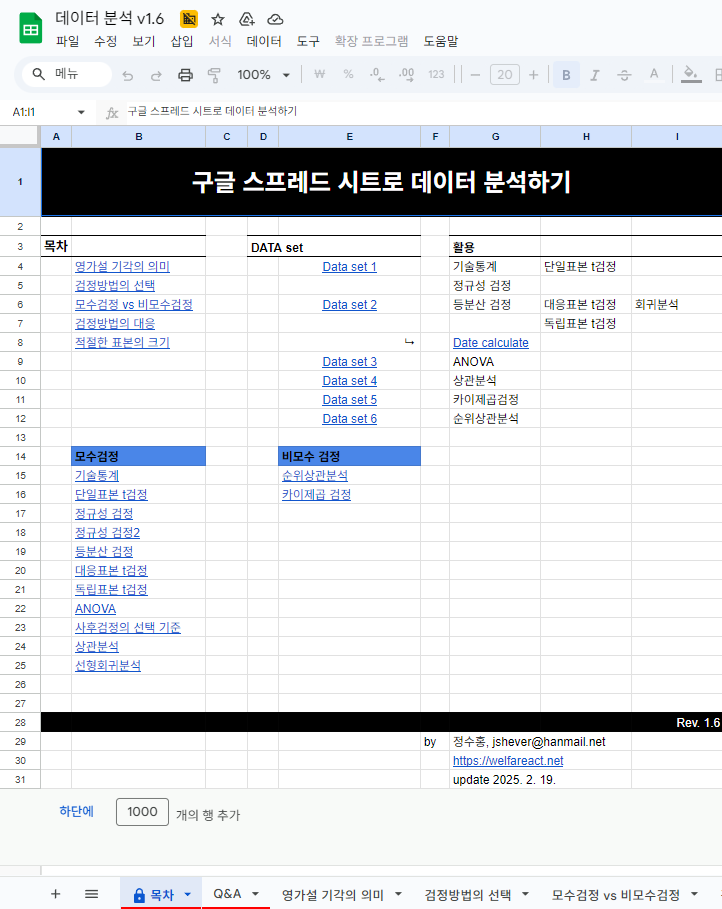

기초 통계 분석
"스프레드시트를 활용한 자동 데이터 분석"
기본적인 통계 분석을 위해 구글 스프레드시트를 활용한 자동화 도구를 제공합니다. 데이터셋 선택 후 관찰값을 입력하면 실시간으로 분석 결과가 산출됩니다.
💡 사용 방법
- 기본적인 통계 이론에 대한 이해를 바탕으로 시작합니다.
- 분석하려는 변수의 수에 맞는 Data set을 선택합니다.
- 조사된 관찰값을 입력 시트에 붙여넣습니다.
- 분석 도구를 선택하면 자동으로 결과가 산출됩니다.

기초 통계 분석 인터페이스 예시